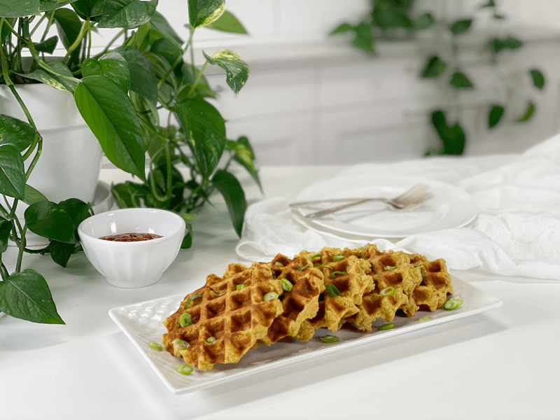
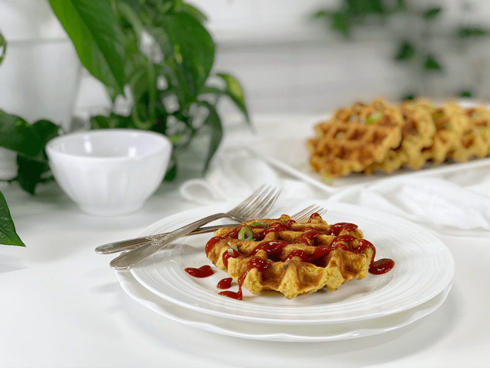
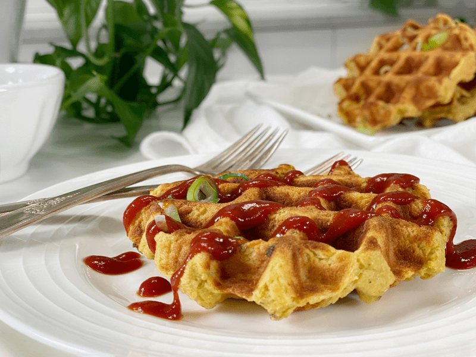

Cheesy Mashed Potato Waffles | Oil-Free
Ready to enjoy a warm vegan cheesy savory waffle?! I hope you’ll say yes, because I am here to deliver. This recipe was born out of necessity. I had 29 pounds of russet potatoes that were about to go south on me. Not on my watch, Mr. Potato Head, not on my watch! These waffles are crispy on the outside with a soft interior. I would consider this recipe to be good ol’ down to earth comfort food.

Just in case you are wondering what to serve these with, I am here with tried and true ideas. The day I was making them, Bob floated to my side, led by the aroma of potato waffles, just like you see on the cartoon of Tom and Jerry. When our eyes connected, I knew he was asking if he could have one. I will never deny that man good healthy food. I plated one up and sprinkled sliced green onions and ketchup over the top. Delicious. If you want to make homemade ketchup, please be sure to check out my recipe (here).
Just yesterday, I popped one out of the freezer and dropped it into the toaster. In one toasting cycle, it turned out hot on the inside and crispy on the outside. I placed it in the center of the plate and piled some fresh steamed broccoli on top, followed by a vegan cheese sauce. I have many options for you; potato-based recipe, cashew-based recipe or sweet potato-based. Frankly, they taste wonderful all by themselves. They can either be the main star of your dinner or a fun and unique way to serve up mashed potatoes as a side dish.

Within the ingredients, you will see that I provided you with two different measurement lists. One will make approximately six waffles and the second will be enough to create sixteen. When it comes to preparing food, I am all about creating enough for leftovers. Since I spend so much of my time in the kitchen developing recipes, I need to make the most of my lunch or dinner breaks, and I do that by eating yesterday’s or even last month’s creation!
Doubling Recipes
Did you know that when you double, triple, or even quadruple a recipe, there are guidelines you should stick to? Allow me to share some tidbits that will help you further down the road.
- Write down the quantities of all of the ingredients in the increased quantities before you start preparing food, so you can refer to the most appropriate quantities as you cook. This will give you time to think so you can consider which ingredients should be increased in doubled or tripled quantities, and which ingredients might not require such an increase.
- Not all ingredients within a recipe should be automatically doubled or tripled. For instance, if a dish contains fresh garlic, the doubled quantity may be way too assertive, even for a recipe that is doubled in every other way. Even simple seasonings like salt and pepper can become a bit much if you double or triple the amount. Remember, you can always add more salt or seasoning, but once it’s added, you can’t take it away. I general, I use the following guideline:
- Salt, pepper, and mild herbs: add 1.5 times the original amount, then add more to taste.
- Pungent or spicy ingredients: add 1.25 times the original amount, then add more to taste.

Make Every Bite Count
- Start by using organic potatoes. According to the USDA’s Pesticide Data Program, 35 different pesticides have been found on conventional potatoes. Of these, 6 are known or probable carcinogens, 12 are suspected hormone disruptors, 7 are neurotoxins, and 6 are developmental or reproductive toxins.
- Steam the potatoes, rather than boiling them. Since the potatoes’ nutrients are water-soluble, they WILL leach out of the boiled potato and into the cooking water, which is usually discarded. Steaming them removes far fewer nutrients, which will leave the potato more vitamin-filled.
- If you use a store-bought vegetable broth, check the sodium count on the box or can. If it is high in salt, reduce the amount of salt added to the recipe. You can always taste test and add more if need be. Speaking of taste testing, be sure to read my post called The Value of Tasting as You Go.
- Most importantly…when you walk into the kitchen to prepare food for yourself or for those you love, do so with joy in your heart. If you are angry, emotional, or upset, turn right around and take a few moments to center yourself. Trust me, it makes all the difference in how the food turns out. Don’t believe me? Try it both ways and report back.
I hope you enjoy this recipe. Please be sure to leave a comment below and have a wonderful day. blessings, amie sue

Ingredients
Yields 6
- 1 lb potatoes, peeled & steamed
- 1/4 cup vegetable broth
- 1/4 cup nutritional yeast
- 1 Tbsp onion powder
- 1 tsp garlic powder
- 1 tsp sea salt
- 1/4 tsp black pepper
- 3 Tbsp dried chives
Batch Cooking – yields 16
- 3 lbs potatoes, peeled & steamed
- 1 cup vegetable broth
- 3/4 cup nutritional yeast
- 2 Tbsp onion powder
- 3 tsp garlic powder
- 2 tsp sea salt
- 1/2 tsp black pepper
- 6 Tbsp dried chives
Potato Steaming Options
Option 1 -Steam Method | Stove Top
- Scrub, peel and cut the potatoes into uniform-sized pieces (so they cook evenly.)
- If the potatoes are tiny, you can steam them whole.
- Russet potatoes are my first choice due to their softer texture when cooked. I have also used a 50/50 mix of starchy russet potatoes and waxy, buttery Yukon golds.
- Add about one inch of water to a large pot and bring to a boil.
- Once the water comes to a boil, place the loaded steamer basket into the pot. Sprinkle the potatoes with the salt and cover.
- Turn the heat to medium and let steam until fork-tender, roughly 20 to 30 minutes. The potatoes must be fully cooked, or your end result will be lumpy.
- Using a slotted spoon or a strainer, transfer the cooked potatoes to a glass or metal mixing bowl.
Option 2 – Steam Method | Instant Pot
- Wash potatoes, peel (if desired), dice in uniform sizes (so they cook evenly).
- If the potatoes are really small, you can steam them whole.
- I like to keep my diced potatoes in water during prep to prevent discoloration. Drain when ready to steam.
- Add 2 cups of water to the Instant Pot, and place the loaded steam basket inside.
- You don’t want the potatoes sitting in too much water. If using a 6-quart unit, only use 1 cup of water.
-
Attach and secure the lid and turn the pressure valve to the “Sealing” position.
-
Press “Manual,” place on high pressure, and adjust the cooking time for 7 minutes.
-
When machine beeps, do a quick release by turning the valve to the “Venting” position. Be very careful of the steam shooting out of the valve.
Assembly of Ingredients
- With an electric hand mixer (or handheld potato masher) gradually mix the potatoes in a large mixing bowl along with the vegetable broth, nutritional yeast, onion powder, garlic powder, salt, pepper, and chives. Mix until smooth and fluffy. Set aside.
- Be careful that you don’t overmix the potatoes, or they can become gummy.
Waffle Iron Method
- Preheat the waffle maker. Once the waffle maker is ready, scoop 1/2 cup of batter into the center. Close the lid to cook. My machine took 7 minutes. Keep a close eye on your first batch to see how long your machine takes, since they all differ.
- I used a 1/2 cup cookie scoop, which is how I ended up with circular waffles. For a more square traditional shape, you will need more batter and you will want to push the batter to all corners of the waffle iron.
- The waffle is nearing completion is when you stop seeing steam escape from the machine.
- Either plate the waffles or place them on wire racks so air can circulate around them to prevent sogginess.
-
Repeat until the batter is used up.
Oven Method
- Preheat the oven to 400 degrees (F) and line a pan with parchment paper.
- Remove 1/2 cup worth of batter, roll into a ball, place on the baking tray, and softly flatten the ball to a flat disc.
- Bake for 40 minutes, flipping the patties halfway through the cooking time.
- For your first try, watch the patties to see how long your oven takes. Document the time for the next batch you make.
© AmieSue.com